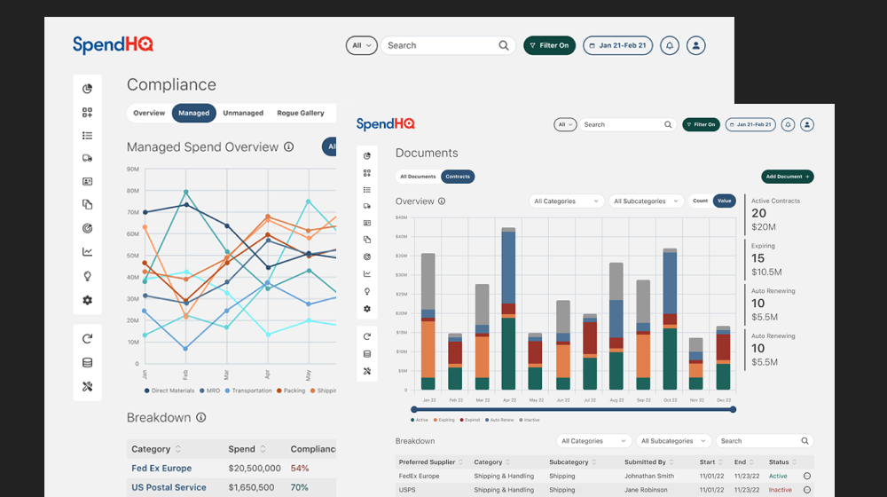
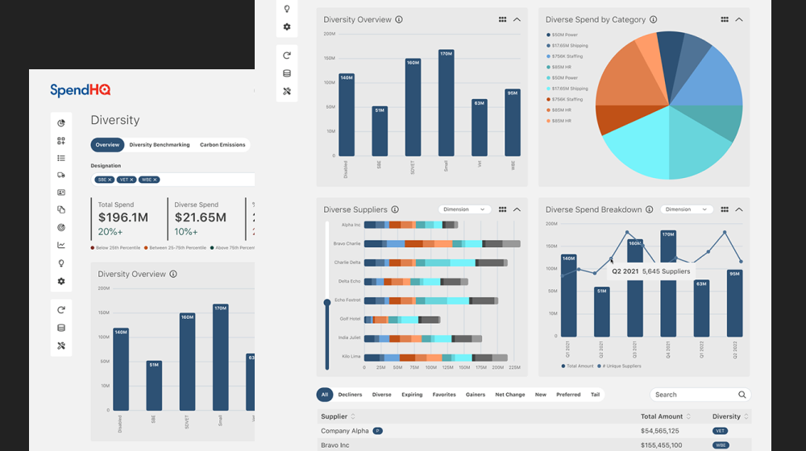
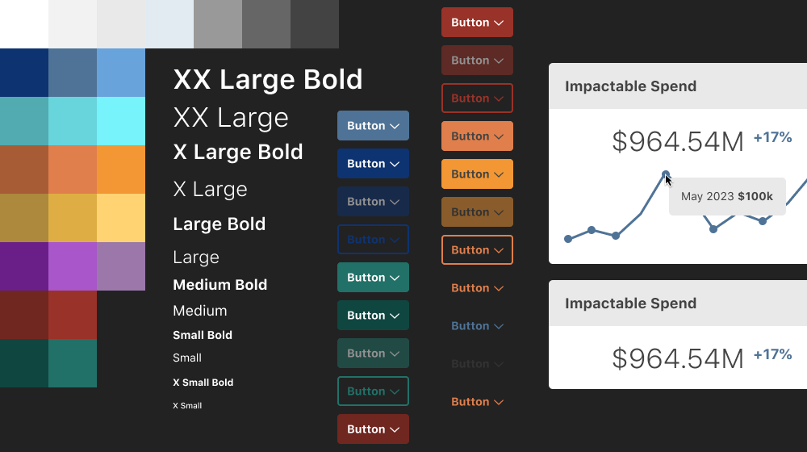

SpendHQ is an all in one spend intelligence dashboard web app, for Fortune 500 companies. It helps them
see
where their money is going, by connecting all of their suppliers and related third party software. It
also uses
AI to re-categorize and re-name their data for them.
SpendHQ had no professional designer before I joined the team. It was my job to lead and design the user
experience and interface to modern design standards.
Research

When I was brought onto the team, the product owner (who started around the same time as myself) and I
sat with
major clients including Pepsi and Under Armour to understand their current likes and dislikes with the
existing
product.
One of these user interview sessions revealed several pain points in a major feature
called
the power filter. After redesigning this feature we saw massive improvements in user feed back and time
to
completion of major goals.
Along with the product owner, we established four main user personas encapsulating high
to low
level financial analysts, and of varied technical aptitude.
When we joined the company, there were no existing analytics tools. We selected
HotJar and Pendo so that we could view heatmaps, user behavior
recordings, contextual feedback, surveys, key metric recording (session time, stickiness, churn, and
NPS
scores), and track each behavior step through their experiences. We worked with development
to make
integration happen.
UX Design

There was no existing process or tools in place for this portion of the design process. Bringing
FigJam into the picture allowed us to map user flows per persona, that
the
product owner, stakeholders, business intelligence, and developers could collaborate on with us in real
time.
This
gave us massive time savings as it eliminated a lot of previous back and forth before.
Leveraging FigJam to wire-frame component and screen states as well,
yielded
the
same time saving thanks to real time collaboration. Completion and sign off of wire-frames before
hi-fi
creation or actual developemnt also provided massive time savings.
UI Design

The existing design system was incomplete, there was only a basic document that detaled
spacing,
typography, coloration and basic styling for components. I designed a whole new design system
composed
of
an atomic design structure.
There were no design files to work from upon my hire so drawing and re-skinning the entire
app
in
Figma was also an accomplishment during my time here. The app included over 200
screens.
Prototyping the hi-fi mockups allowed me to provide user testing
groups,
developers, and stakeholders to test the actual design before any development occured, again saving
resources
and
time.